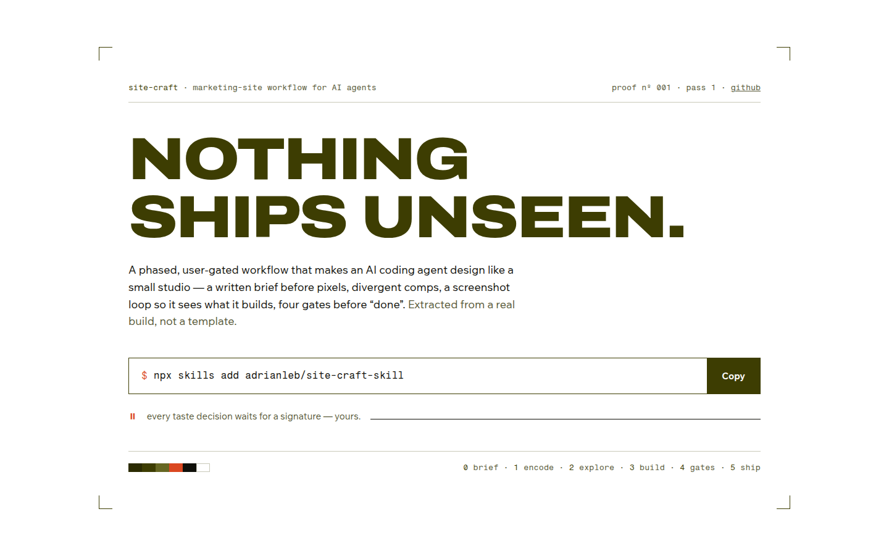
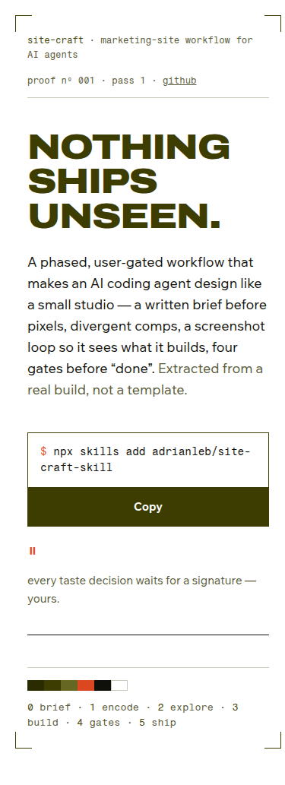
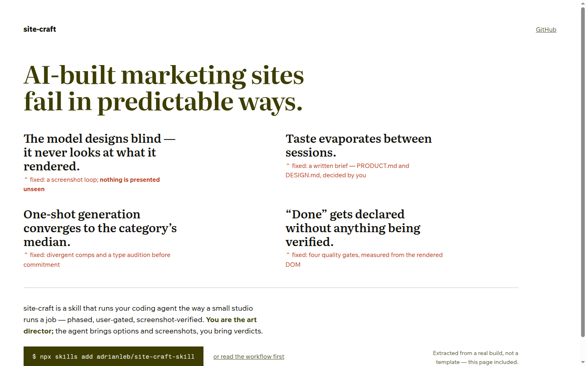
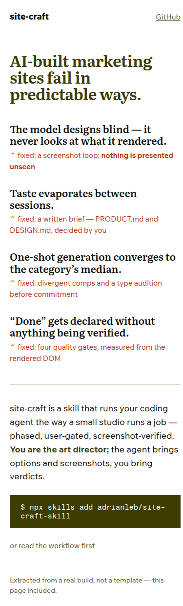
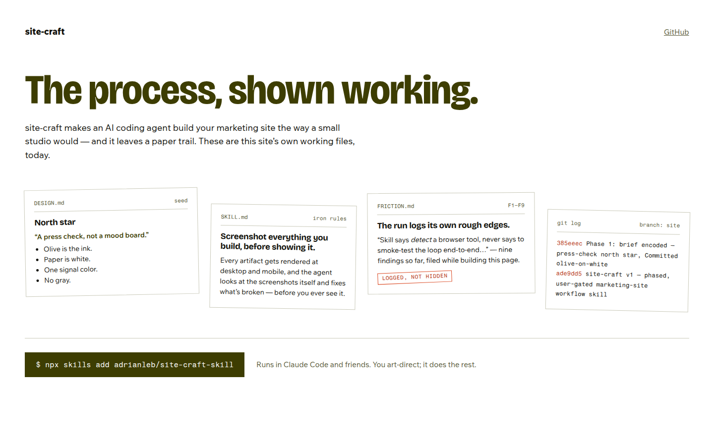
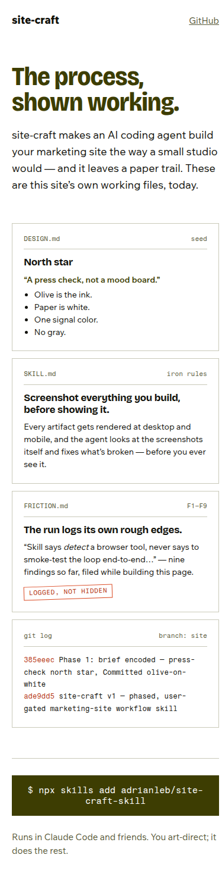
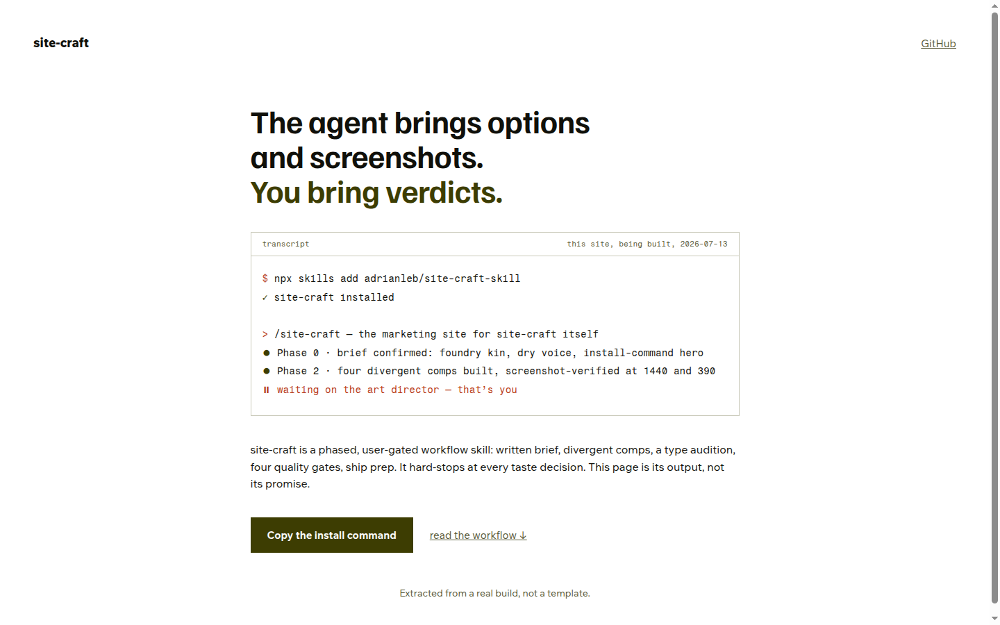
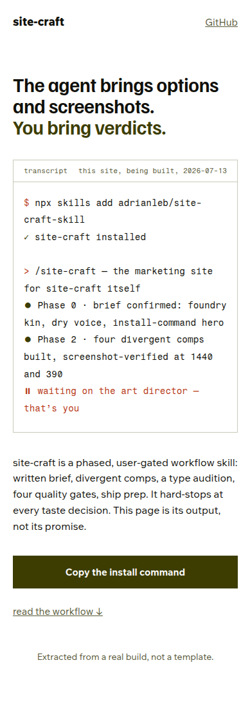

<title>site-craft · comp round 1 — pick a direction</title>
<style>
  :root{
    --paper:#ffffff; --ink:#20241a; --olive:#4b521f; --olive-soft:#5c6430;
    --signal:#b8431c; --muted:#666c4e; --hair:#4b521f2e; --panel:#f6f6f0;
    --mono:ui-monospace,"SF Mono","Cascadia Mono",Menlo,Consolas,monospace;
  }
  @media (prefers-color-scheme: dark){
    :root{ --paper:#181a12; --ink:#e6e7da; --olive:#c0ca70; --olive-soft:#a8b25c;
           --signal:#ff9166; --muted:#a3a98a; --hair:#c0ca7038; --panel:#20231736; }
  }
  :root[data-theme="dark"]{ --paper:#181a12; --ink:#e6e7da; --olive:#c0ca70; --olive-soft:#a8b25c;
           --signal:#ff9166; --muted:#a3a98a; --hair:#c0ca7038; --panel:#20231736; }
  :root[data-theme="light"]{ --paper:#ffffff; --ink:#20241a; --olive:#4b521f; --olive-soft:#5c6430;
           --signal:#b8431c; --muted:#666c4e; --hair:#4b521f2e; --panel:#f6f6f0; }
  html{ background:var(--paper); }
  body{
    margin:0 auto; max-width:66rem; padding:3rem 1.25rem 5rem;
    background:var(--paper); color:var(--ink);
    font:400 1rem/1.6 system-ui,-apple-system,"Segoe UI",sans-serif;
  }
  header.top{ margin-bottom:3rem; }
  .kicker{ font-family:var(--mono); font-size:0.8125rem; color:var(--muted); margin:0 0 0.75rem; }
  h1{ font-size:clamp(1.6rem,4vw,2.3rem); line-height:1.15; margin:0 0 0.75rem; letter-spacing:-0.015em; text-wrap:balance; }
  .intro{ max-width:62ch; color:var(--ink); margin:0; }
  .intro b{ color:var(--olive); }

  nav.toc{ margin:1.5rem 0 0; font-size:0.9375rem; display:flex; flex-wrap:wrap; gap:0.4rem 1.4rem; padding:0; }
  nav.toc a{ color:var(--olive); }

  section.comp{ border-top:1px solid var(--hair); padding-top:2rem; margin-top:3rem; }
  .comphead{ display:flex; justify-content:space-between; align-items:baseline; gap:1rem; flex-wrap:wrap; margin-bottom:0.4rem; }
  .comphead h2{ font-size:1.35rem; margin:0; letter-spacing:-0.01em; }
  .comphead h2 .no{ color:var(--signal); font-family:var(--mono); font-size:1.05rem; margin-right:0.5rem; }
  .face{ font-family:var(--mono); font-size:0.8125rem; color:var(--muted); }
  .thesis{ max-width:70ch; margin:0.25rem 0 1.5rem; font-size:1.0625rem; }
  .thesis b{ color:var(--olive); }

  figure{ margin:0 0 1rem; }
  figure img{ width:100%; height:auto; display:block; border:1px solid var(--hair); }
  figcaption{ font-family:var(--mono); font-size:0.75rem; color:var(--muted); padding-top:0.4rem; }

  .row{ display:grid; grid-template-columns:minmax(0,2.2fr) minmax(0,1fr); gap:1.25rem; align-items:start; }
  @media (max-width:720px){ .row{ grid-template-columns:1fr; } }

  .notes{ display:grid; gap:1rem; }
  .notes h3{ font-size:0.8125rem; font-family:var(--mono); font-weight:400; color:var(--muted); margin:0 0 0.3rem; }
  .notes ul{ margin:0; padding-left:1.1rem; font-size:0.9375rem; }
  .notes li{ margin-bottom:0.35rem; }
  .notes .risk li::marker{ color:var(--signal); }
  .notes .str li::marker{ color:var(--olive); }

  .reco{
    margin-top:3.5rem; border:1px solid var(--olive); padding:1.5rem 1.75rem;
    background:var(--panel);
  }
  .reco h2{ margin:0 0 0.75rem; font-size:1.2rem; }
  .reco h2::before{ content:"→ "; color:var(--signal); }
  .reco p{ max-width:70ch; margin:0 0 0.75rem; }
  .reco p:last-child{ margin:0; }
  .reco .verdictline{ color:var(--muted); font-size:0.9375rem; }
  a{ color:var(--olive); }
</style>

<header class="top">
  <p class="kicker">site-craft · phase 2 · round 1 of 2 · 2026-07-13</p>
  <h1>Four directions for site-craft’s own site</h1>
  <p class="intro">Same locked brief — <b>olive ink on white paper, press-check north star, dry voice,
  install-command hero</b> — four genuinely different interpretations: composition, voice, and density
  all vary. Each was screenshot-verified at 1440 and 390 and self-critiqued before landing here.
  Grafting organs across comps is normal; say what to keep.</p>
  <nav class="toc">
    <a href="#c1">01 proof sheet</a><a href="#c2">02 argument</a>
    <a href="#c3">03 working wall</a><a href="#c4">04 transcript</a><a href="#reco">recommendation</a>
  </nav>
</header>

<section class="comp" id="c1">
  <div class="comphead">
    <h2><span class="no">01</span>The Proof Sheet</h2>
    <span class="face">display: Archivo Expanded · live at /comps/01-proof-sheet.html</span>
  </div>
  <p class="thesis"><b>The hero is the north star made literal:</b> a proof sheet at the moment of
  sign-off — crop marks, job slug, color-control bar, and a signature line. Installing is approving.</p>
  <div class="row">
    <figure><figcaption>1440 × 900</figcaption></figure>
    <div class="notes">
      <figure><figcaption>390, full page</figcaption></figure>
      <div class="str"><h3>strengths</h3><ul>
        <li>Strongest brand commitment; nothing median about it</li>
        <li>Slug, crop marks, color bar: ownable, checkable details</li>
        <li>CTA sits inside the metaphor — you sign the proof</li>
      </ul></div>
      <div class="risk"><h3>risks</h3><ul>
        <li>Loud metaphor: below-fold must sustain press vocabulary</li>
        <li>Uppercase display caps headline length</li>
        <li>Explains the product least — needs the argument nearby</li>
      </ul></div>
    </div>
  </div>
</section>

<section class="comp" id="c2">
  <div class="comphead">
    <h2><span class="no">02</span>The Argument</h2>
    <span class="face">display: Literata · live at /comps/02-argument.html</span>
  </div>
  <p class="thesis"><b>The README’s argument, typeset as a broadsheet:</b> four named failures of
  AI-built sites, each annotated with its process fix — the copy itself is the differentiation.</p>
  <div class="row">
    <figure><figcaption>1440 × 900</figcaption></figure>
    <div class="notes">
      <figure><figcaption>390, full page</figcaption></figure>
      <div class="str"><h3>strengths</h3><ul>
        <li>Sells the <em>why</em> fastest; no one else names the failures</li>
        <li>Serif conviction reads senior, not showy</li>
        <li>Collapses gracefully to mobile — it’s just the argument</li>
      </ul></div>
      <div class="risk"><h3>risks</h3><ul>
        <li>Weakest imagery; text must carry everything</li>
        <li>Serif-display kinship with the saturated editorial cliché (fingerprint banned, family resemblance remains)</li>
        <li>Below the fold could go wall-of-text without discipline</li>
      </ul></div>
    </div>
  </div>
</section>

<section class="comp" id="c3">
  <div class="comphead">
    <h2><span class="no">03</span>The Working Wall</h2>
    <span class="face">display: Bricolage Grotesque · live at /comps/03-working-wall.html</span>
  </div>
  <p class="thesis"><b>Show, don’t claim:</b> the site’s own working files — DESIGN.md, the iron rules,
  the friction log, the real git log — pinned as the hero imagery. The paper trail is the proof.</p>
  <div class="row">
    <figure><figcaption>1440 × 900</figcaption></figure>
    <div class="notes">
      <figure><figcaption>390, full page</figcaption></figure>
      <div class="str"><h3>strengths</h3><ul>
        <li>Most honest proof on offer — real files, real SHAs</li>
        <li>Imagery-rich with zero stock; recursion is the wit</li>
        <li>Below-fold extends naturally: each phase pins new artifacts</li>
      </ul></div>
      <div class="risk"><h3>risks</h3><ul>
        <li>Densest hero; headline competes with the papers</li>
        <li>Stays truthful only if maintained with the repo</li>
        <li>Stagger must stay restrained or it goes scrapbook</li>
      </ul></div>
    </div>
  </div>
</section>

<section class="comp" id="c4">
  <div class="comphead">
    <h2><span class="no">04</span>The Transcript</h2>
    <span class="face">display: Familjen Grotesk · live at /comps/04-transcript.html</span>
  </div>
  <p class="thesis"><b>The demo as exhibit:</b> a real session transcript where the punchline is the
  pause — <em>waiting on the art director, that’s you.</em> Shows exactly what using it feels like.</p>
  <div class="row">
    <figure><figcaption>1440 × 900</figcaption></figure>
    <div class="notes">
      <figure><figcaption>390, full page</figcaption></figure>
      <div class="str"><h3>strengths</h3><ul>
        <li>Clearest “what is it, how does it feel” of the four</li>
        <li>The ⏸ line lands the art-director promise in one beat</li>
        <li>Lowest responsive risk; sturdy at every width</li>
      </ul></div>
      <div class="risk"><h3>risks</h3><ul>
        <li>Most conventional composition — nearest the dev-tool median</li>
        <li>Transcript must track the product to stay truthful</li>
        <li>Brand character leans on body copy, not form</li>
      </ul></div>
    </div>
  </div>
</section>

<section class="reco" id="reco">
  <h2>Recommendation: 01 as the skeleton, organs from the others</h2>
  <p><b>Take the Proof Sheet as the direction.</b> It’s the only comp whose <em>composition</em> is the
  brand thesis — the others explain or demonstrate; 01 embodies. Its two real risks are both solved by
  grafting: the argument (02) becomes the second section — what the press check exists to catch — and
  the working wall (03) becomes the paper-trail section further down, where it can grow with the repo.
  The transcript (04) makes a strong mid-page exhibit for “what it feels like to run.”</p>
  <p>Round 2 (type audition) would then freeze 01’s skeleton and audition ~6 display voices in place of
  Archivo — including a width-play wildcard and, if you want the comparison, one serif in the 02 spirit.</p>
  <p class="verdictline">Your call: pick a direction (any of the four), name any grafts, or redirect
  entirely. Live comps are on the tailnet if you want to feel them: http://100.67.202.87:4173/comps/</p>
</section>
